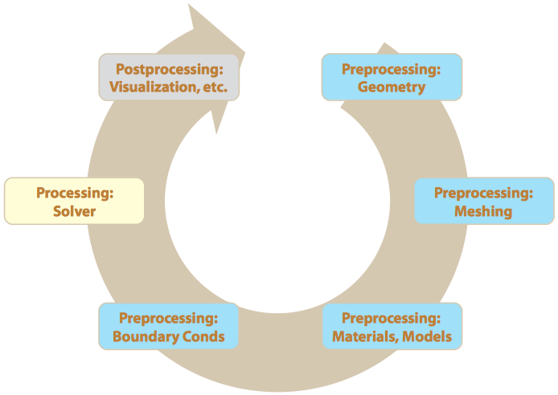

|
|
1. Introduction & Workflow |
Contents
Exercise 1.1: Mixing TeeThis laboratory exercise will introduce you to the commercial computational fluid dynamics (CFD) software ANSYS® Fluent. Fluent is comparable to many other CFD codes in that it uses the finite-volume method to solve the governing mass and momentum equations. Fluent is not the only commercial code used in industry, though it is fairly popular. The real trick to learning any piece of software is to know 1) what its capabilities and limitations are; and 2) where in the interface the various features and options are located. This is the first of many exercises that will introduce you to the software. We begin by simulating a mixing tee. We will begin in media res: the geometry and mesh are already provided, and you will walk through the stages of setting up and executing the job, as well as plotting the results. We will then circle back around to creating a mixing tee geometry and mesh so that you can see all steps in the Fluent workflow. |
Problem DescriptionWe will simulate the flow of water through a mixing tee at two different inlet temperatures. We wish to determine features of the resulting temperature distribution as well as the axial velocity profile along the centerline. 
Cold water at \(10 \,^{\circ} \text{C}\) will flow into a \(5 \,\text{cm}\) ⌀, \(30 \,\text{cm}\) long section of pipe at a volumetric rate of \(40 \,\text{cm}^{3} \cdot \text{s}^{-1}\). Hot water at \(90 \,^{\circ} \text{C}\) will enter the mixing tee halfway up (\(15 \,\text{cm}\) along the pipe) via a \(3 \,\text{cm}\) ⌀, \(15 \,\text{cm}\) long section of pipe at a volumetric rate of \(20 \,\text{cm}^{3} \cdot \text{s}^{-1}\). \[ \begin{align} \rho_{\text{water}} & = 1 \,\text{g} \cdot \text{cm}^{-3} \\ \mu_{\text{water}} & = 0.01 \,\text{cP} = 0.01 \,\text{g} \cdot \text{cm}^{-1} \cdot \text{s}^{-1} \end{align} \] |
Exercise
# Calculate Reynolds number of cold inlet flow.
from math import pi
rho_water = 1.0 # g·cm^-3
mu_water = 0.01 # g·cm^-1·s^-1
V_z = 40.0 # cm^3·s^-1
D_z = 5.0 # cm
A_z = pi * D_z ** 2 / 4 # cm^2
v_z = V_z / A_z # cm·s^-1
Re_z = rho_water * v_z * D_z / mu_water;
print('v_z = ', v_z)
print('Re_z = ', Re_z)
v_z = 2.0371832715762603 Re_z = 1018.5916357881302
# Calculate Reynolds number of hot inlet flow.
V_y = 20.0 # cm^3·s^-1
D_y = 3.0 # cm
A_y = pi * D_y ** 2 / 4 # cm^2
v_y = V_y / A_y # cm·s^-1
Re_y = rho_water * v_y * D_y / mu_water;
print('v_y = ', v_y)
print('Re_y = ', Re_y)
v_y = 2.8294212105225838 Re_y = 848.8263631567751
# Calculate Reynolds number of outlet flow.
V_out = V_y + V_z # cm^3·s^-1
D_out = D_z # cm
A_out = A_z # cm^2
v_out = V_out / A_out # cm·s^-1
Re_out = rho_water * v_out * D_out / mu_water;
print('v_out = ', v_out)
print('Re_out = ', Re_out)
v_out = 3.0557749073643903 Re_out = 1527.8874536821952 |
Getting Started

A wireframe of the mesh will load in the graphics window, and some details of the mesh will print to the console window. The left side of the interface contains a list of items that require definition each time you set up a model in Fluent. In fact, if you look at the main menu, you will see these exact tasks under the Notice when you click on the different entries in the left pane, how the next section over changes and reveals sub-options and more tasks for you to complete when defining the model. |
MeshHere is where you can scale the coordinates of your mesh: for example, if you define your geometry in millimeters, you can easily scale it down by a factor of 1000 to get it to meters. (Fluent requires standard SI units for all dimensions and properties.) Here you also define steady or transient, whether or not you want a pressure-based solver (incompressible flow) or a density-based solver (compressible flow). You can also define your out-of-plane assumption when working with 2D models (planar vs axisymmetric).

|
ModelHere you specify the physics you want to include in your model.
|
MaterialsHere is where you define your material properties. The default fluid is always air. You could create new material by typing in its physical properties. Alternatively, Fluent has most commonly used materials in its database. You simply need to copy them from there.
|

PhasesMultiphase flow will remain disabled for now—we are working with a single phase simulation, and thus you don’t need to do anything here. We will revisit this later as needed. |

Boundary ConditionsHere you apply your boundary conditions to the list of surfaces you created:
|

Mesh Interfaces, Dynamic Mesh, Reference ValuesWe will revisit these as needed. |
Solution MethodsHere you can select appropriate numerical methods to solve your problem. Choose |
Solution ControlsHere you control the iterative solution process, as you may have learned in ME 412 or another CFD class. |
MonitorsHere you define your convergence criteria and can set up a monitor to watch the value of certain quantities, like the integrated composition over the domain, or the flux through a surface. |
InitializationHere is where you define your initial conditions and initial guess of the solution for your iterative solution method.
|
Calculation ActivitiesHere is where you can set up autosaves, animations, and any other tasks that need to happen as the model is being solved. |
Run Calculation
|
PostprocessingThese are several tools that you use to query your results, be they intermediate or final. This is where you can make contour plots, or extract data and make \(x\)–\(y\) plots.
We performed the foregoing postprocessing in the |

ConclusionYou have seen the typical workflow for a finite-volume or finite-element package, whether CFD or structural. ANSYS, ABAQUS, Fluent, COMSOL, and other packages all follow a similar workflow, stepping from definitions and meshing through solutions and postprocessing.

The next few exercises and workshops will step through this process. We will then examine transient simulations, turbulence models, and other significant modeling capacities. CreditsNeal Davis, Zhongzhong Zhang, and Sparsh Chadha developed these materials for Computational Science and Engineering at the University of Illinois at Urbana–Champaign.
|
 This content is available under a
This content is available under a